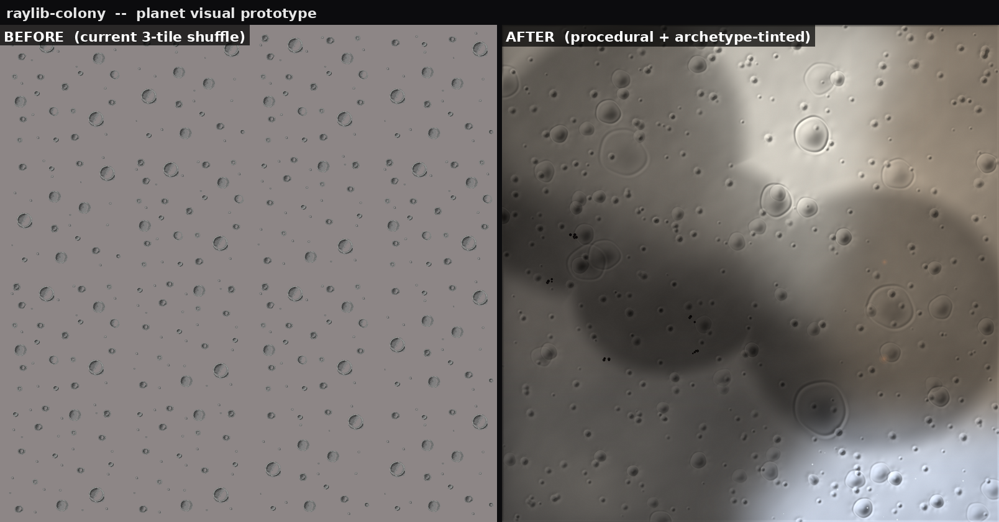
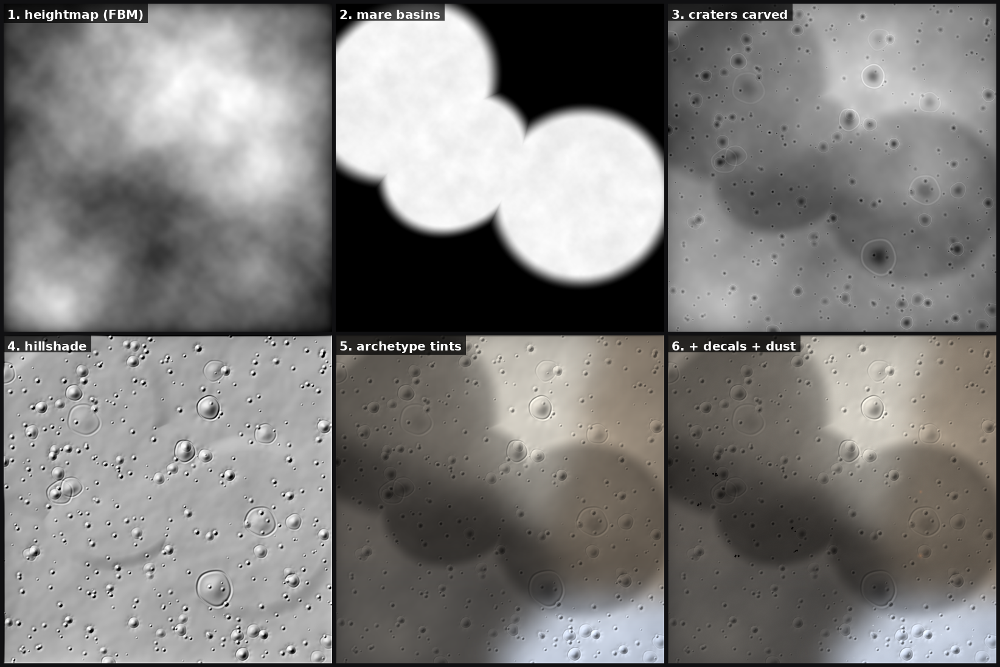
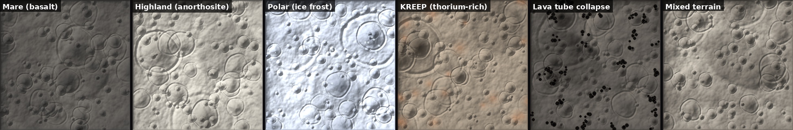
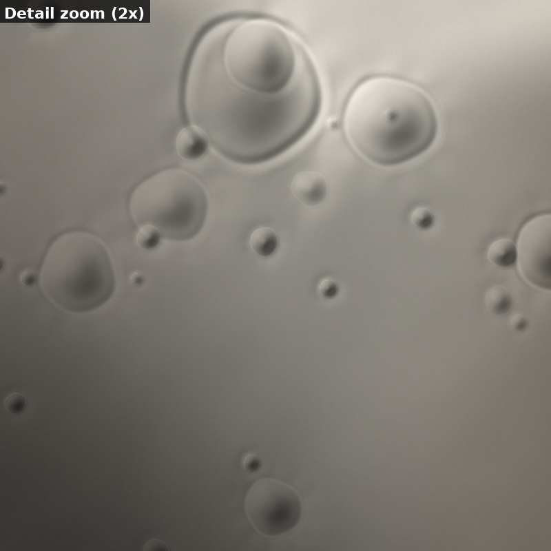
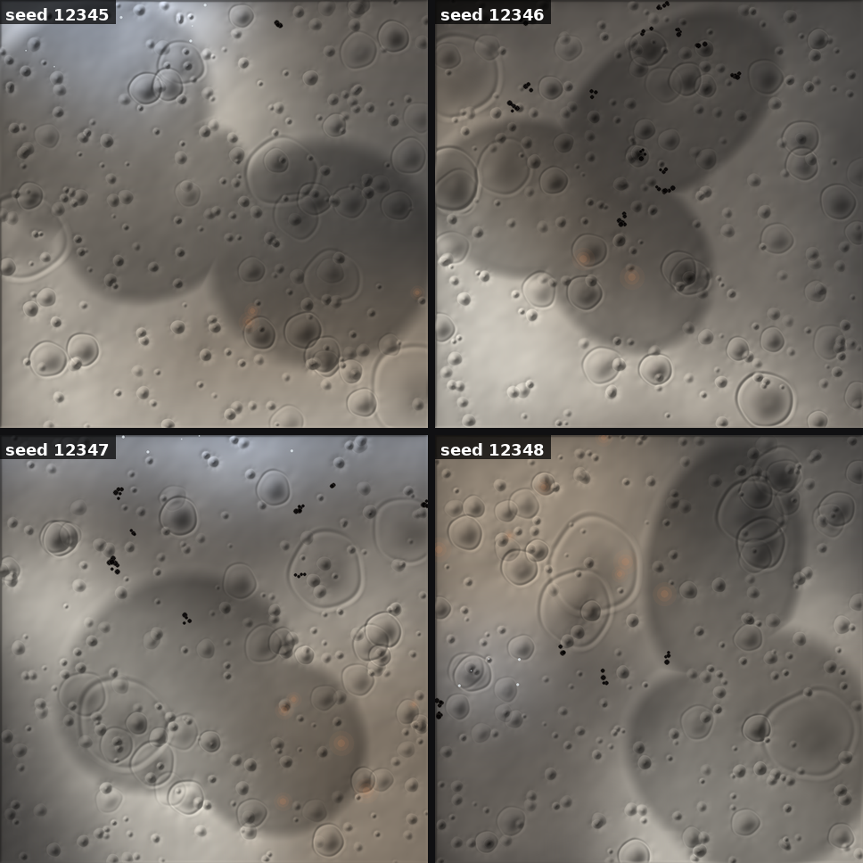
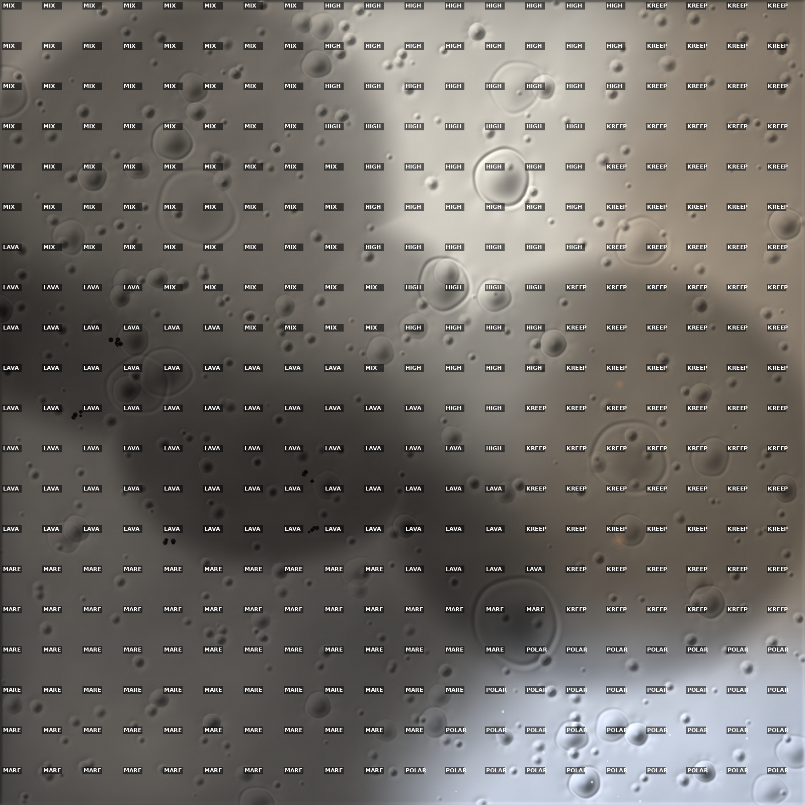

generate.py from a seed; no painted assets.
The left panel is the current in-game look (3 PNG tiles shuffled across the grid). The right panel is the prototype: smooth elevation, hillshaded craters, mare basins, biome-tinted archetype regions, and a fine regolith dust layer. Same 1600×1600px area at the same camera scale.

Six stages, each emits its own PNG so we can see what every layer contributes. The whole thing is fully vectorised in numpy + PIL so it generates a 1600×1600 planet in a few seconds.

SiteArchetype drives a base/shadow/high palette; boundaries blurred so it doesn’t look like a checkerboard.Each tile uses the full pipeline, but forces a single archetype across the whole tile. This is what each biome reads as in isolation. Real planet view blends them along the cluster boundaries.

2× crop on a crater cluster — this is roughly what the player would see when zoomed into a sect. Crater bowls show proper sun-side rim highlights and shadow-side dark crescents, ejecta blankets break up around them, mare basins peek in.

Four planets from four seeds, smaller scale. Mare layouts, crater distributions and archetype clusters all vary, but each still reads as a moon. This is the property we’d need for re-playable maps.

The 20×20 game grid with each cell labelled by archetype. The surface art reflects the underlying classification — warm KREEP in the upper-right, polar in the lower-right, lava-tube voids in the left band, mare under the dark plains.

Two practical paths to integrate this into raylib-colony:
generate.py to C++ once,
bake one PNG per game seed at startup, upload as a single texture in
RenderManager::LoadMoonTiles(). No runtime cost beyond
the existing tile path.
OrbitalSurveyData per cell to
drive the archetype palette. Looks identical, supports infinite
zoom, but more shader work.
Either way the inputs are already in the game: SiteArchetype
per cell, plus the orbital survey scalars (slope, hydrogen,
illumination). Nothing about the prototype invents new game data.
Re-generate any time with python3 generate.py. All output
PNGs land in output/.